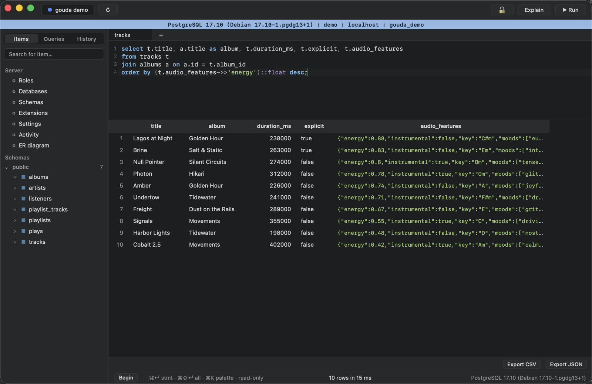
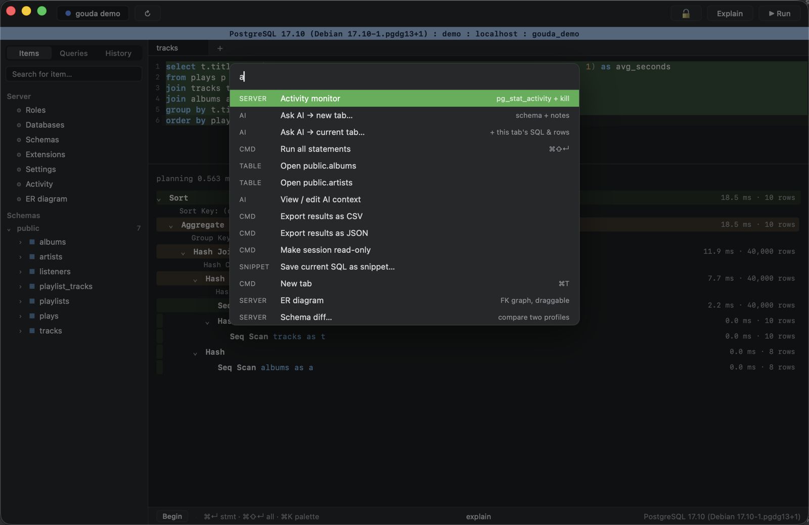
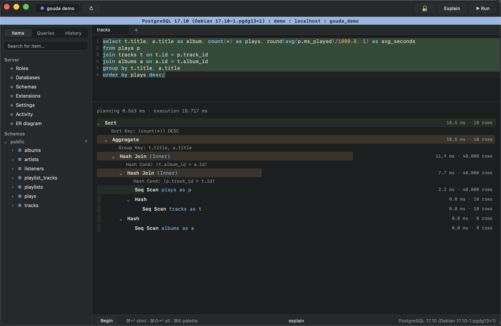
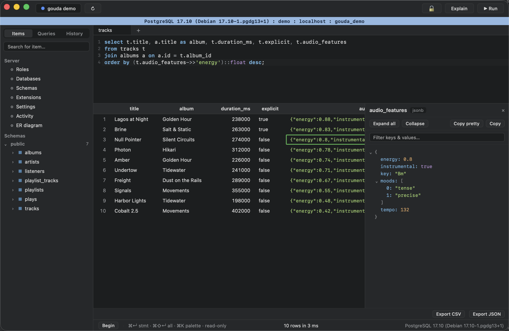
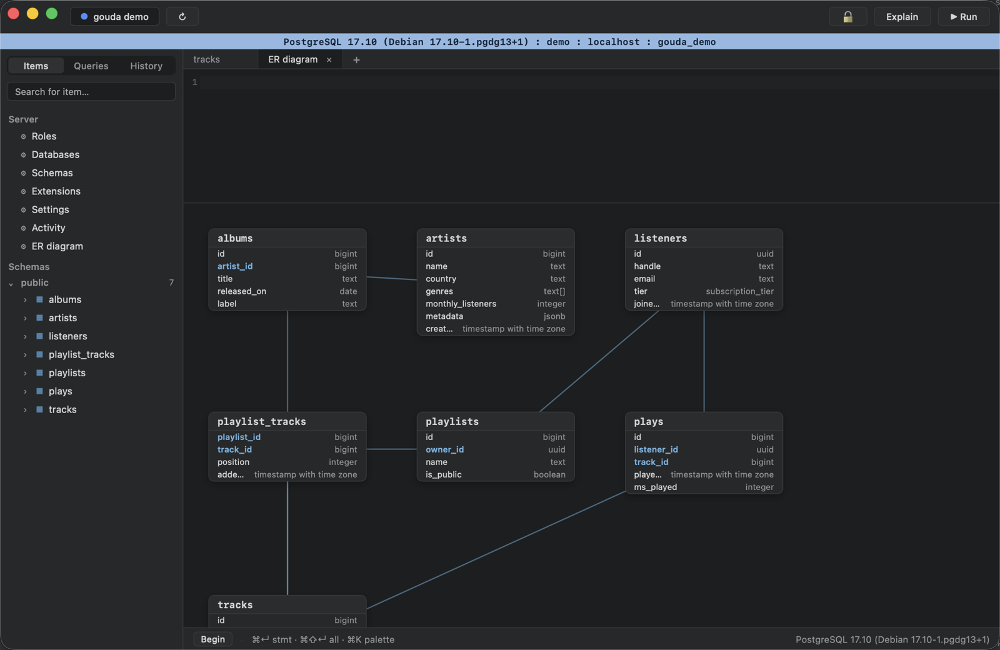

Fast, keyboard-first, and honestly Postgres-native — SSH tunnels, safe editing, visual EXPLAIN, JSONB tools, and AI query generation. Free and open source.

CodeMirror 6 with Postgres highlighting and schema-aware autocomplete that triggers eagerly after keywords — tables after FROM, columns after WHERE, alias. resolution.
\du, \dt, \d table…) translated into catalog queries
Plan tree with time and cost bars, self-time heat, and est-vs-actual and rows-filtered-out badges. ANALYZE only ever runs for selects — writes are planned, never executed.

A collapsible typed tree with key/value filtering and copy-as-Postgres-path. Edit a single node and it's staged as a surgical jsonb_set that won't clobber sibling keys.

pg_stat_activity monitor with cancel / kill per session
Passwords in the macOS Keychain, pure-Rust SSH tunnels, TLS modes.
Preview the exact SQL, transactional apply, exactly-one-row guarantee.
Per-profile colors and separate windows keep prod and dev apart.
CSV / JSON straight to file with no row cap.
Describe a query, get commented SQL — it explores your schema first, never auto-runs.
Command palette, statement-under-cursor, grid navigation, ⌘K everything.
Prereqs: Rust, Node 20+, macOS.
# clone, build, and drag the app to /Applications
git clone https://github.com/KennerMiner/gouda-postgres-workbench
cd gouda-postgres-workbench
npm install
npm run tauri build
macOS-only for now — the Keychain integration and window chrome are macOS-specific. Linux/Windows would need porting work; PRs welcome.